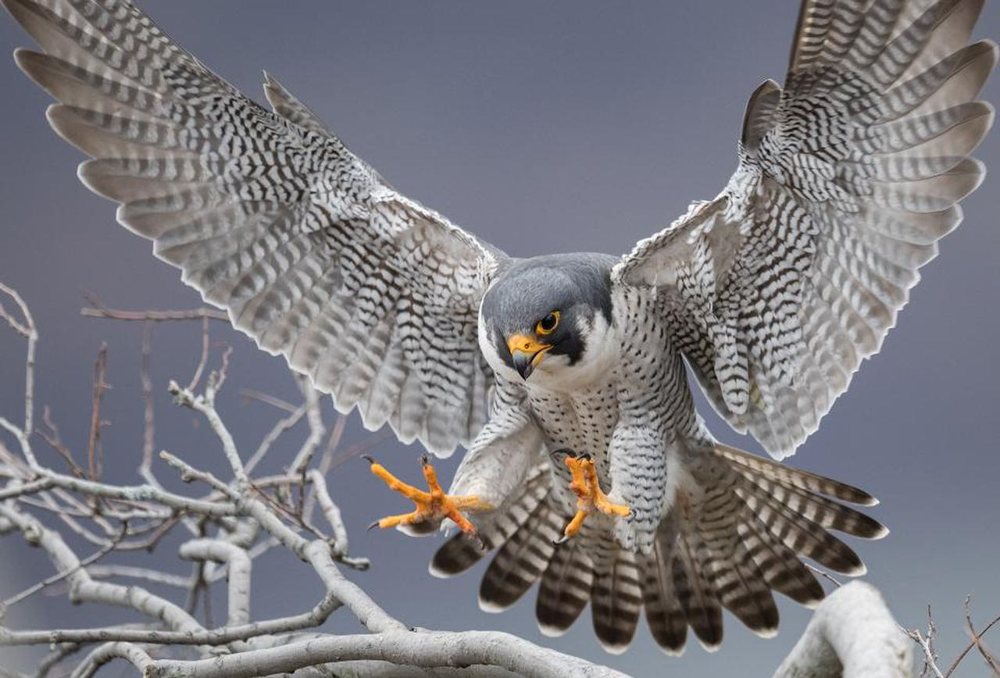

Sakalas keleivis
Sakalus keleivius pažinti gali dauguma pasaulio sakalininkų. Šie paukščiai yra paplitę kiekviename planetos kampelyje, per dieną gali nuskrist iki 1000 km. Sakalas keleivis – vienas ištvermingiausių paukščių pasaulyje. Ne kartą jis klaidino ankstyvuosius keliautojus, kai buvo pastebėtas tupintis ant laivų stiebų keli šimtai kilometrų nuo kranto. Suaugęs sakalas išvysto 390km/h greitį
Įdomūs faktai:
- Dėl pesticidų naudojimo (pvz. DDT), sakalų keleivių populiacija pasaulyje buvo beveik sunaikinta. Patelėms padėjus plono lukšto kiaušinius ant pesticidais nupurkštos žemės, viduje vystęsis embrionas žūdavo. Uždraudus DDT naudojimą JAV, The Peregrine Fund į laisvę paleido daugiau nei 4 000 nelaisvėje užaugintų sakalų keleivių.
- Daug sakalininkų mėgsta skraidinti keleivius dėl jų neapsakomo greičio, kurį išvysto nerdami link grobio.
- Sakalai keleiviai prisitaikė gyventi miestuose. Jie dažnai peri ant aukštų pastatų atbrailų, ten lengvai susiranda ir vandens. Miestuose daug keleivių mėgstamo grobio, balandžių ir varnėnų, o natūralių grobuonių beveik nėra.
- Sakalai keleiviai – labai atsargūs ir drovūs paukščiai. Dėl šios priežasties nakties poilsio į lizdą grįžta tik nurimus kitiems paukščiams ir daugumai gyvūnų, vėlai vakare.
- Keleivio regėjimas yra 8 kartus stipresnis nei žmogaus, savo grobį gali pastebėti toliau nei už 300 m.